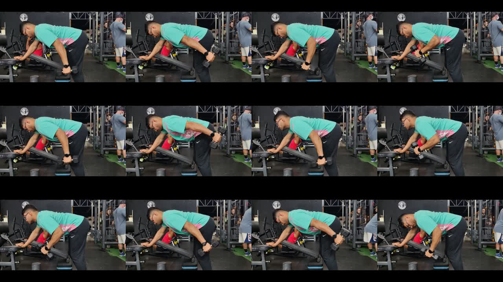
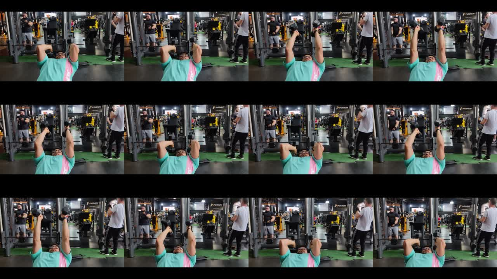
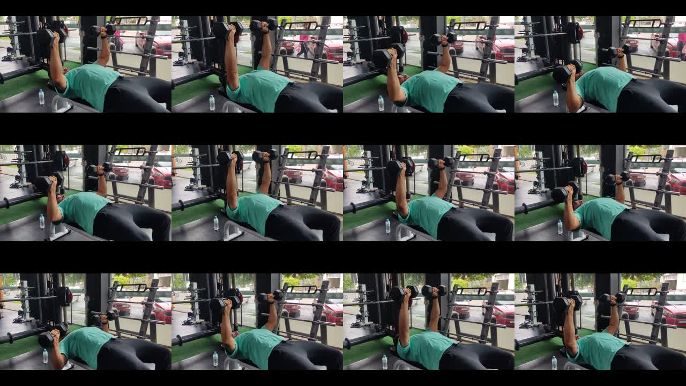

3 pilotos produzidos, nenhum aprovado. Os 41 exercícios continuam inativos.
Vídeos locais com controles para revisão, mute e loop. Esta página não grava aprovação no aplicativo, não envia arquivos e não altera perfis. Reprodução aqui não substitui QA em iPhone/Android.
Tríceps Coice com Halter
dumbbell-triceps-kickback
PRODUZIDO — AGUARDANDO REVISÃO · somente horizontal
Um halter, apoio da outra mão no banco e extensão unilateral observados. Confirmar estabilidade do ombro e loop completo.
Goulart via wger · CC BY-SA 4.0 · original · licença12 quadros e verificações da revisão

Tríceps Testa com Halteres
lying-dumbbell-triceps-extension
PRODUZIDO — AGUARDANDO REVISÃO · somente horizontal
Extensão de cotovelos deitado, dois halteres e pegada neutra observados. Recorte termina antes da mudança de câmera; amplitude e costura do loop pendentes.
Goulart via wger · CC BY-SA 4.0 · original · licença12 quadros e verificações da revisão

Supino Reto com Halteres
dumbbell-flat-bench-press
PRODUZIDO — AGUARDANDO REVISÃO · somente horizontal
Banco reto e dois halteres observados. Selecionada tomada contínua sem corte de câmera; apoio dos pés e loop completo ainda exigem revisão.
Goulart via wger · CC BY-SA 4.0 · original · licença12 quadros e verificações da revisão

41 movimentos
Exercício
Produção
Abdução de Quadril na Polia cable-hip-abduction
PENDENTE
Adução de Quadril na Polia cable-hip-adduction
PENDENTE
Afundo com Halteres dumbbell-stationary-lunge
PENDENTE
Agachamento Sumô com Halter dumbbell-sumo-squat
PENDENTE
Barra Fixa pull-up
PENDENTE
Cadeirinha na Parede wall-sit
PENDENTE
Crucifixo Inverso na Máquina reverse-pec-deck
PENDENTE
Crucifixo com Elástico resistance-band-chest-fly
PENDENTE
Desenvolvimento Arnold arnold-dumbbell-press
PENDENTE
Desenvolvimento no Smith smith-machine-shoulder-press
PENDENTE
Elevação Frontal com Elástico resistance-band-front-raise
PENDENTE
Elevação Frontal na Polia cable-front-raise
PENDENTE
Elevação Pélvica na Máquina machine-hip-thrust
PENDENTE
Encolhimento com Halteres dumbbell-shrug
PENDENTE
Encolhimento no Smith smith-machine-shrug
PENDENTE
Extensão de Joelho com Elástico resistance-band-knee-extension
PENDENTE
Flexão Fechada close-grip-push-up
PENDENTE
Glúteo Quatro Apoios quadruped-hip-extension
PENDENTE
Mergulho nas Paralelas parallel-bar-dips
PENDENTE
Panturrilha em Pé com Halteres standing-dumbbell-calf-raise
PENDENTE
Panturrilha no Degrau step-calf-raise
PENDENTE
Panturrilha no Leg Press leg-press-calf-raise
PENDENTE
Prancha Lateral side-plank
PENDENTE
Pullover com Halter dumbbell-pullover
PENDENTE
Pullover na Polia straight-arm-cable-pulldown
PENDENTE
Remada Alta com Halteres dumbbell-upright-row
PENDENTE
Remada Curvada com Barra bent-over-barbell-row
PENDENTE
Rosca Direta com Elástico resistance-band-biceps-curl
PENDENTE
Rosca Martelo na Polia cable-rope-hammer-curl
PENDENTE
Stiff com Barra barbell-stiff-leg-deadlift
PENDENTE
Superman superman
PENDENTE
Supino Fechado close-grip-barbell-bench-press
PENDENTE
Supino Inclinado com Barra incline-barbell-bench-press
PENDENTE
Supino Reto com Barra barbell-flat-bench-press
PENDENTE
Tríceps Coice com Halter dumbbell-triceps-kickback
PRODUZIDO — AGUARDANDO REVISÃO
Tríceps Testa com Halteres lying-dumbbell-triceps-extension
PRODUZIDO — AGUARDANDO REVISÃO
Supino Reto com Halteres dumbbell-flat-bench-press